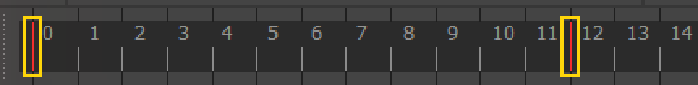
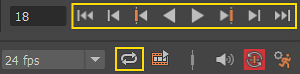
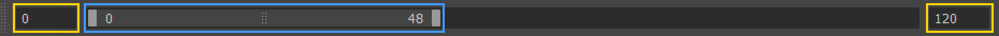
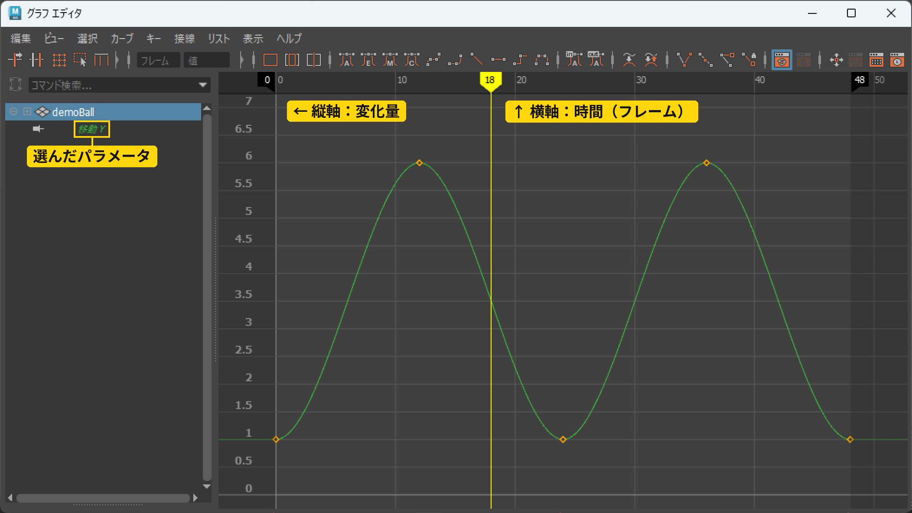
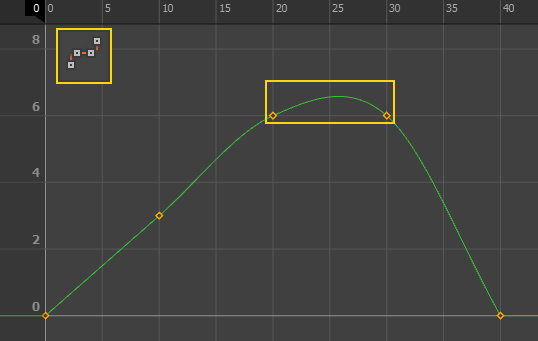
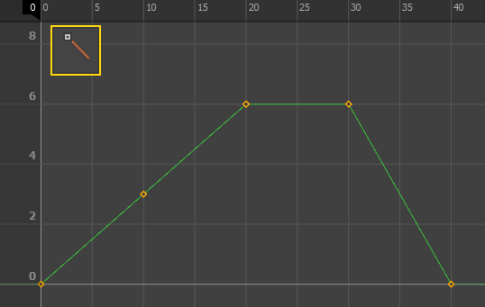
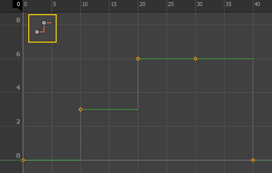
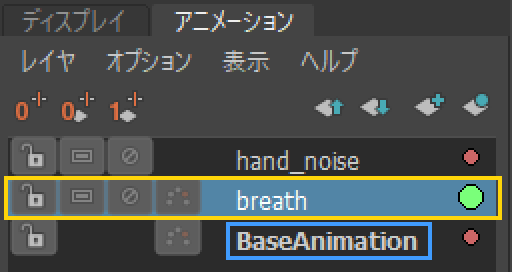
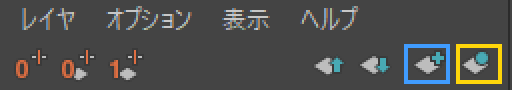
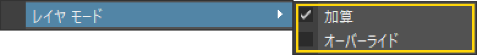

レイヤを増やしすぎて管理できない
アニメーションレイヤはあくまで補佐的に活用するもの。
+9の授業 ／ 座学 04
キーフレームについて
アニメーションをさせるものを選んだ状態で、
「S」キーでキーフレームを打つと、
画像のように赤色の印が打たれる。
キーフレームの打ち方は「S」キーを打つ以外でも
いくつか方法がある。
例：チャンネル ボックスで右クリック ＞ 選択項目のキー設定

タイムスライダについて
アニメーションの再生や停止、リピートなど、
様々な再生方法がある。
アニメーションの確認を行うのに、頻繁に使う部分。

再生範囲について
再生範囲の指定は、全体の範囲と、
再生させる範囲の2種類を指定できる。
基本は全体の範囲をいじる。

グラフ エディタ（カーブエディタ）について
アニメーションの情報がグラフ化されているエディタ。
選択したパラメータのアニメーションの変化を確認できる。
縦軸が変化量で、
横軸がタイムスライダと同様の時間軸となる。
どの3Dソフトも基本的に概念は一緒。

接線の種類
接線は、キーの所でのカーブの向き。
種類によって、
キーとキーの間のカーブの形が変わる。
下の画像は、同じキー（0・10・20・30・40 フレーム）で
接線だけを変えたもの。
左上の黄色の枠は、
グラフ エディタの上に並ぶ、その接線のボタン。



アニメーションレイヤとは？
アニメーションレイヤは、
既存のアニメーションに対して
非破壊で動きを追加・調整できる機能のこと。
ベースとなる動き
（Maya では BaseAnimation）に対して、
別レイヤで修正や演出を重ねることができる。
活用例
「ベースを壊さずに調整できる」ことが最大のメリット

キーは、選んでいるレイヤに入る。
打つ前に、
どのレイヤが選ばれているか確かめる。
レイヤの作り方

レイヤのモード

よくある失敗
アニメーションレイヤはあくまで補佐的に活用するもの。
オーバーライドを使う機会は、ほぼない。
レイヤ名をわかりやすく命名したり、
役割ごとに整理したりすると効果的。